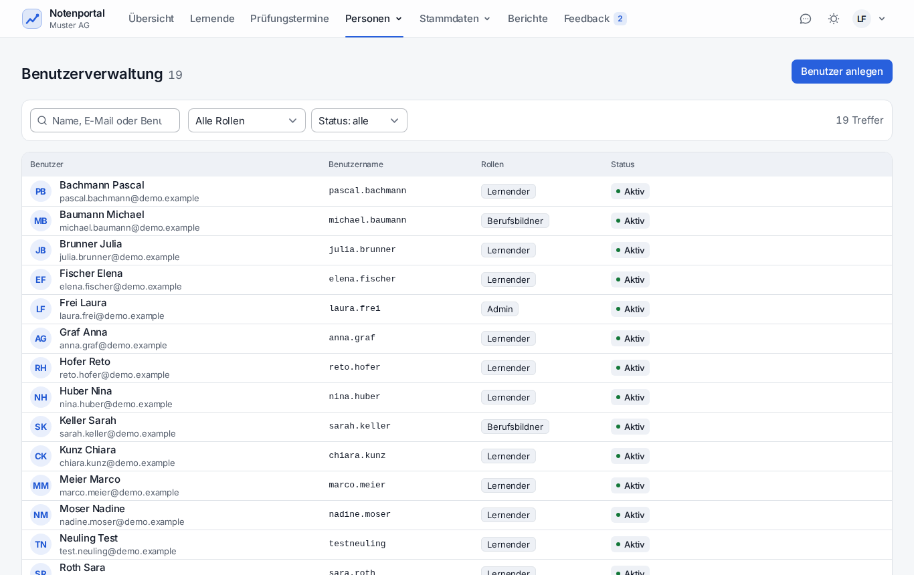
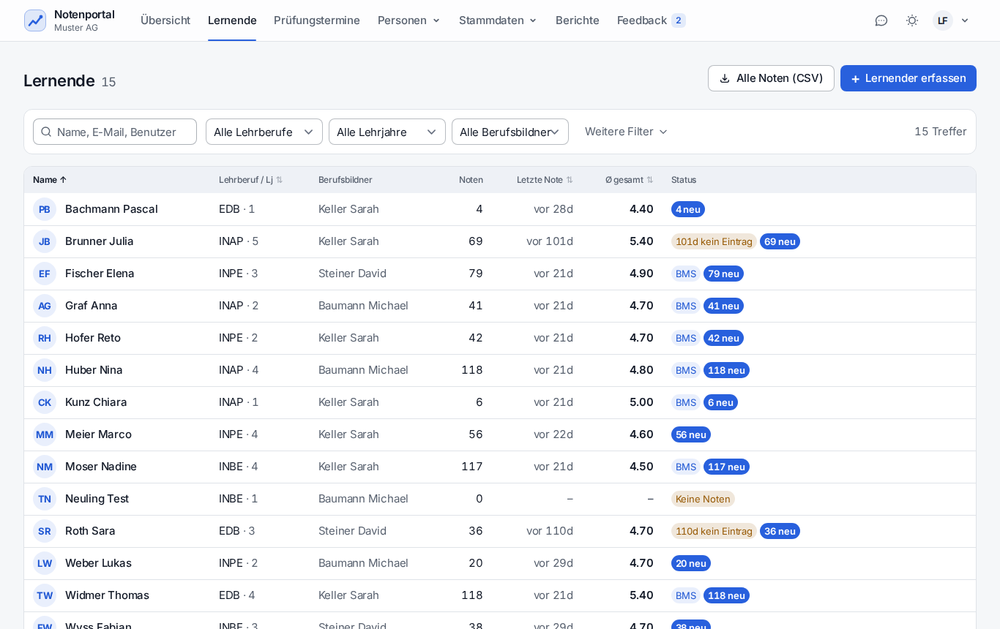
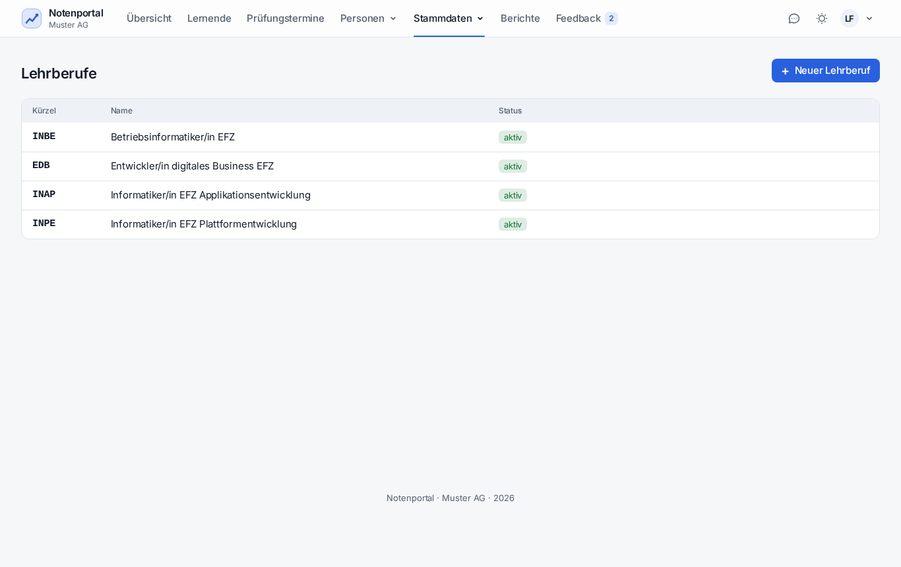
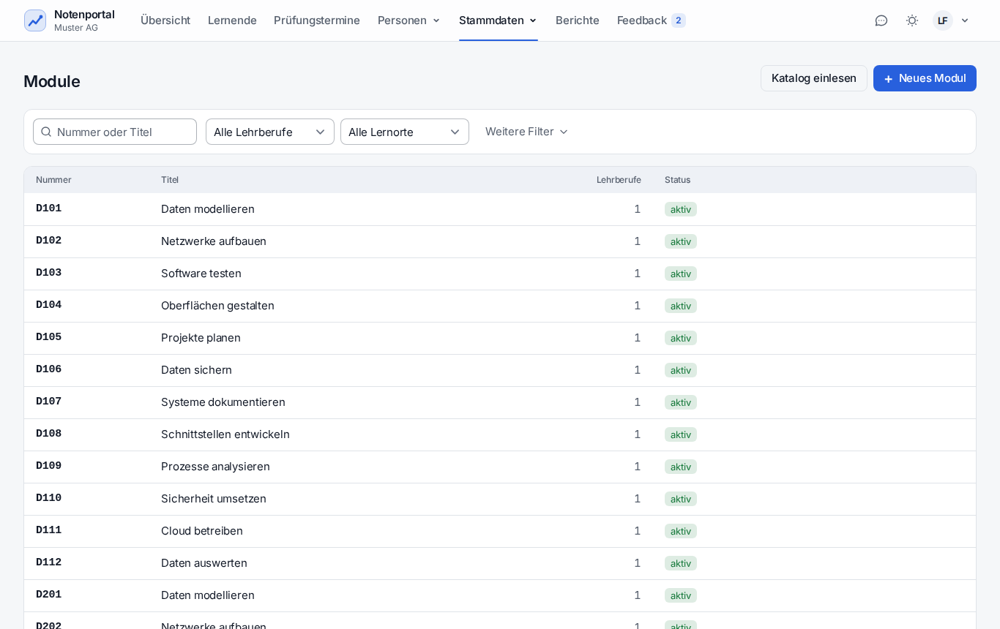
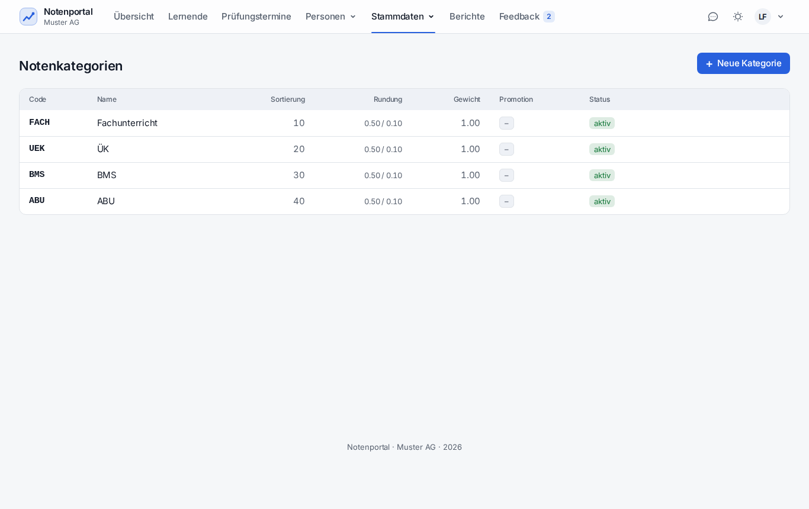
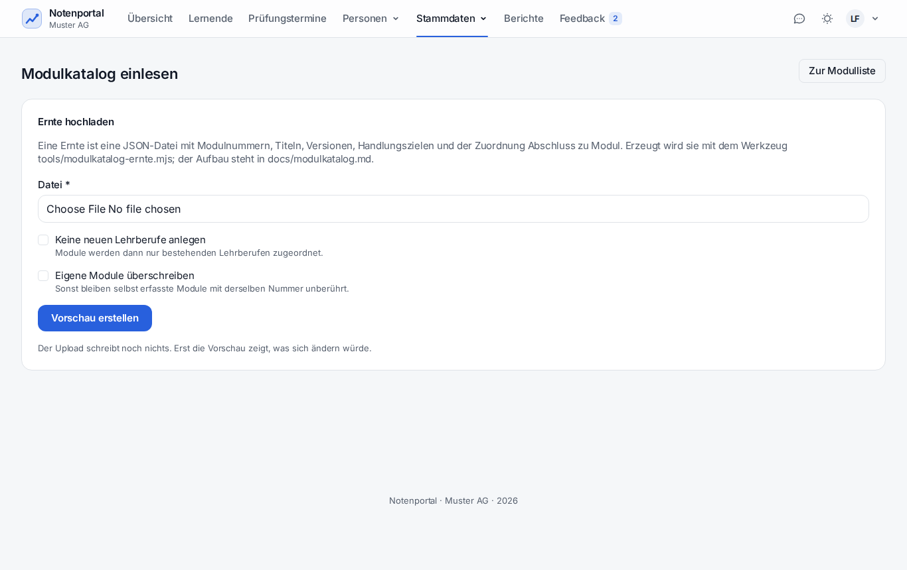
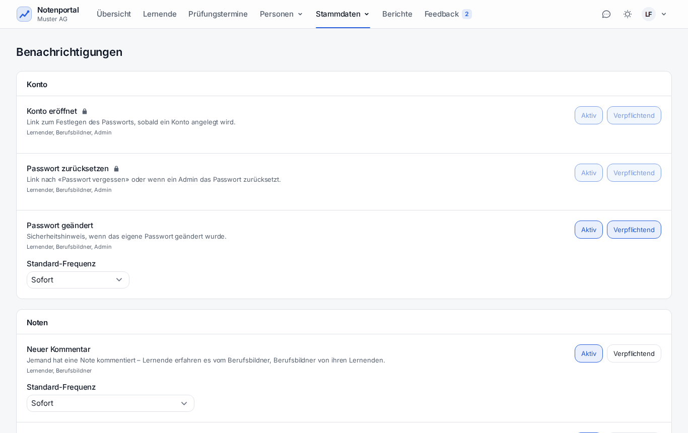
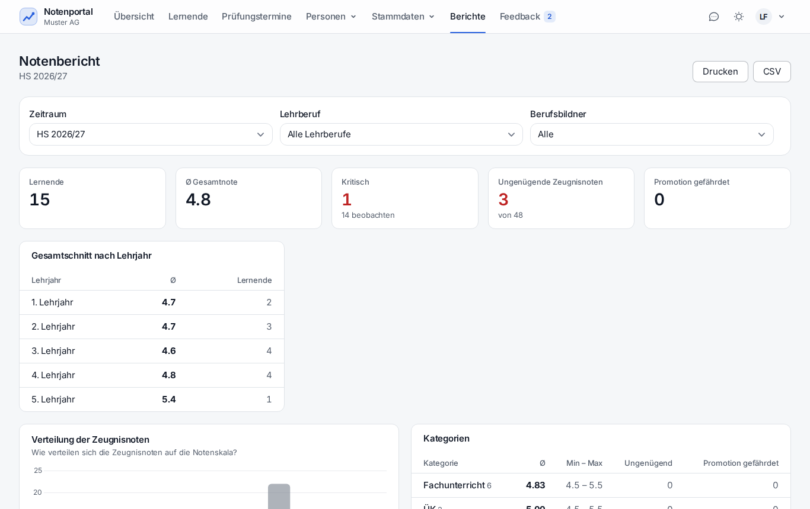

Menü: Übersicht · Lernende · Prüfungstermine · Personen · Stammdaten · Berichte · Feedback. Der Admin darf zusätzlich alles, was der Berufsbildner darf – für alle Lernenden.
«Handlungsbedarf» ist die tägliche Arbeitsliste: Lernende ohne Track oder Betreuung, fehlende Sicherung, offene Meldungen, fehlgeschlagene Jobs und Mails, Kalenderfehler, kritische Lernende.

| Fall | Weg |
|---|---|
| Einzelne Person | Personen → Benutzer → «Benutzer anlegen»; Rolle Admin oder Berufsbildner wählen |
| Einzelner Lernender | Lernende → «+ Lernende» (Lehrberuf, Lehrbeginn, Betreuung, Track) |
| Ganzer Jahrgang | Betrieb → «Einrichtung» → Schritt «Personen»: bis 100 Lernende und 50 Berufsbildner je Vorgang, Startpasswörter zum Ausdrucken |
| Zugang weg | Personen → Benutzer → Person → «Passwort zurücksetzen»: schickt einen Link, 7 Tage gültig |
| Person verlässt den Betrieb | Konto auf inaktiv setzen – die Anmeldung ist sofort gesperrt, die Daten bleiben für Auswertungen erhalten |

| Seite | Wofür | Worauf achten |
|---|---|---|
| Lehrberufe | Beruf mit Fächern und Modulen, Lernort, Pflicht, empfohlenes Semester | Hier entscheidet sich, was Lernende im Notenformular überhaupt zur Auswahl haben |
| Fächer | Fach mit Kategorie und optionalem Track (BMS/ABU) | Ohne Track gilt das Fach für alle |
| Kategorien | Rundung, Gewicht im Gesamtschnitt, Promotionsregeln | Änderungen wirken rückwirkend auf alle Berechnungen – das ist gewollt |
| Semester | Bezeichnung, Start, Ende | Nur leere Semester lassen sich löschen |
| Module | Nummer, Titel, Katalogversion, Verweis | Die Nummer ändert nur ein Admin: an ihr hängen die Noten aller |




php artisan notenportal:modulkatalog-export. Sonst wird der Katalog mit tools/modulkatalog-ernte.mjs von modulbaukasten.ch geholt.Dasselbe auf der Kommandozeile:
php artisan notenportal:modulkatalog ernte.json # nur Vorschau
php artisan notenportal:modulkatalog ernte.json --anwenden # schreiben, in einer Transaktion
php artisan notenportal:modulkatalog-export katalog.json # Stand dieser Instanz ausgeben
| Bereich | Inhalt |
|---|---|
| Betrieb | Name, Logo (PNG/JPG/WebP, max. 1 MB), Thema, Notengrenzen, Rundung, Fristen |
| Sicherungen | Zustand, «Jetzt sichern», Herunterladen, Löschen; Kopie ausser Haus mit «Verbindung testen» |
| Systemhinweis | Banner mit Text, Stufe, Zielgruppe und Zeitfenster – auch auf der Anmeldeseite |
| Sitzungs-Timeout | 15–480 Minuten; zwei Minuten vorher kommt die Warnung «Angemeldet bleiben» |
| Einrichtung | Öffnet die geführte Ersteinrichtung erneut – der Weg für ganze Jahrgänge |
.env).
Was der Admin als verpflichtend markiert, kann niemand abwählen – es erscheint bei den Benutzern gesperrt sichtbar. Alles andere entscheidet jede Person selbst.

Sortierbar, als CSV exportierbar, druckbar. Für Standortgespräche und Lehrabschlussplanung.
Meldungen aus dem Portal (Fehler, Idee, Frage, Sonstiges) landen unter «Feedback» – mit Seite, Rolle, Browser, Zeit, letzten JS-Fehlern und optional einem Screenshot. Eine Antwort benachrichtigt die meldende Person. Der schwebende Meldeknopf lässt sich unter Betrieb abschalten.

365 Tage aufbewahrt, filterbar nach Aktion, Person und Zeitraum. Passwörter, Token und andere Geheimnisse werden nie protokolliert.
Jede Person kann ihre Daten selbst als ZIP herunterladen (Einstellungen → Daten). Der Admin kann das für jedes Konto tun (Personen → Benutzer → Datenauskunft). Enthalten sind Kontodaten und je nach Rolle Noten, Prüfungen, Ziele, Dokumente oder Betreuungen und Kommentare – nie Daten anderer Personen. Grundlage: Art. 25 DSG.